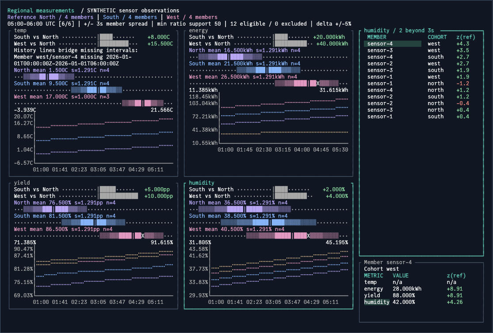

Compare cohort measurements
pattern.CohortComparison accepts one or more cohorts with shared metrics and independent members. It links distributions, aggregate histories, selection and inspection. The regional example compares temperature, energy, yield and humidity; HTTP deployment comparisons remain a configured use case.

Supply observations
A member is identified by (CohortID, MemberID); matching IDs across cohorts do not imply pairing. Each ordered, nonoverlapping, equal-duration window contains at most one sample per member and cohort. Applications own telemetry retrieval, interval construction and any pairing policy; an empty window list is valid.
metrics := []cohort.Metric{
{ID: "temperature", Label: "Temperature", Kind: cohort.Scalar, Unit: "C"},
{ID: "energy", Label: "Energy", Kind: cohort.Scalar, Unit: "kWh", Aggregation: cohort.Sum},
{ID: "yield", Label: "Yield"},
}
sample := cohort.Sample{
MemberKey: cohort.MemberKey{CohortID: "north", MemberID: "sensor-1"},
Measurements: map[string]cohort.Measurement{
"temperature": {Value: -5},
"energy": {Value: 12},
"yield": {Numerator: 85, Denominator: 100},
},
}
Metric semantics separate aggregate behavior from member spread. Histories use the configured aggregate; distributions always show the unweighted member mean and sample standard deviation, including for sum metrics. Those bands describe member variation rather than uncertainty in the aggregate.
| Metric | Aggregate | Units and eligibility |
|---|---|---|
| Scalar | Member mean by default; explicit Sum adds values |
Configured unit; negative values allowed; present scalars are eligible |
| Ratio | Sum of numerators divided by sum of denominators | Percentages, possibly above 100%; deltas use percentage points |
| Ratio support | Low-volume members still contribute to aggregate | MinSupport limits denominator eligibility for spread |
| Overflow | Unrepresentable aggregate or spread becomes unavailable | Finite observations remain preserved; unrepresentable plot spans are labeled unavailable |
| Numeric labels | Magnitude-aware formatting | Tiny nonzero values and large values retain their magnitude |
History annotations identify missing time intervals for each affected cohort or selected member; connecting lines interpolate across those gaps. Missing observations are omitted from Measurements; explicit zero remains observed zero. A zero numerator and denominator represents an observed unavailable ratio, while a nonzero numerator without a denominator is invalid. Members remain selectable when the active metric is absent, and their inspector shows n/a.
Select a reference
Set ReferenceID to compare every other cohort against that identity. Reordering never changes the baseline. Omit it, or call SetReference(""), to show distributions and histories without relative deltas or distances. A single cohort is valid with or without a reference and has no peer deltas.
| Operation | State and validation |
|---|---|
SetReference |
Reject unknown IDs; empty disables relative comparisons |
SetData |
Copy validated input; reject removal of an active reference until changed or cleared |
| Valid update | Retain member, focus, variant and historical window when their data still exists |
| Invalid update | Preserve current data and UI state |
| Tab to metric viewport | Scroll to additional cohorts, metrics and histories in either presentation |
Optional boundaries remain metric-specific. Compatibility fields Hosts and Fleet mean member z-distance and aggregate delta respectively. Attention(metricID) combines all members and the worst peer aggregate assessment; Comparisons(metricID) returns independent assessments keyed by peer cohort ID.
Configured policies without sufficient observations or a reference report Unknown; unconfigured policies remain Off. Missing member measurements receive unknown configured attention. Sigma bands and distances remain descriptive, not significance tests or application decisions.
Migrate existing callers
Existing Requests/Counts samples and cohort.Analyze retain their count-based contract: every metric needs an explicit interval count no greater than requests. Use that representation or a non-nil Measurements map per sample; mixing them is rejected. AnalyzeMetric expects validated data and returns generic Value/HasValue alongside legacy Rate/HasRate aliases.
| Previous contract | Migration |
|---|---|
| First of two cohorts implicitly defines reference | Set ReferenceID explicitly; supply one to N cohorts |
MinRequests |
Compatibility alias for MinSupport; larger threshold applies when both are set |
Selection event has singular candidate |
Read complete cohorts ID list and optional reference |
| Typed attention transition | Candidate identifies the particular peer assessed |
| HTTP-specific labels | Cohort, metric, value and member labels apply across domains |
Native table and viewport access remain available. Data, reference, metric, window and size changes rebuild generated rows, columns, charts and inspector sizing; direct mutations to those properties reset. Apply customizations after those operations, and forward lifecycle commands on the Bubble Tea update thread.